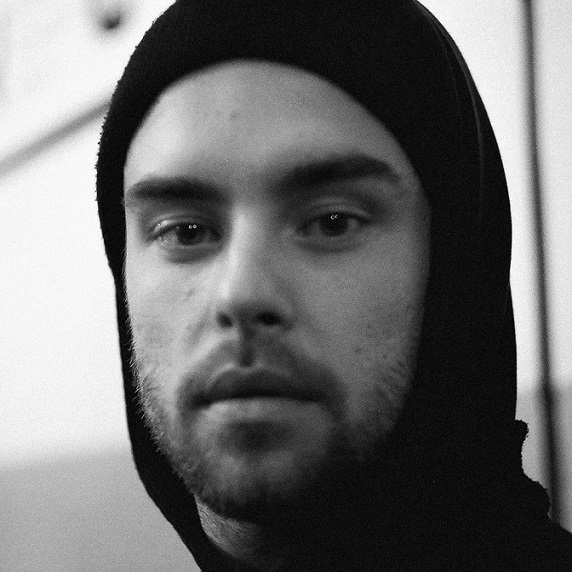

Director of photography, camera operator out of passion and trade.
Graduated Journalism and Communication at UKSW, currently during his third year at Warsaw Film School.
Became passionate about photography at 9 years old. He is an author of photographies, short films, documentary films and music videos.
Co creator of a Papaya Young Directors finalist commercial.